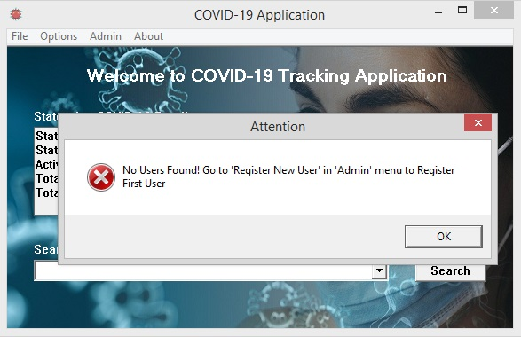

Forgot Password is used to re-create the password of an existing user account. So, if you are the first user of this application after istallation, then you may get an error saying No Users Found! Go to 'Register New User' in 'Admin' menu to Register First User as shown in the picture below. So if you are the first user, then register yourself first as specified in the error message.

Once the first user is registered, Forgot Password can be used to create new password for an existing username. As the Forgot Password is clicked, a search window for searching the username pops up, as shown in the below image.
After typing in the correct username, clicking on search button takes us to a window where it asks for new password, as shown in the image below. If the username seached, doesn't match with the usernames in the database, then an error message Username Not Found! Register as New User is shown.
Once the Create new password window pops up, enter the new password in both Enter New Password and Re-Enter New Password and click Create button. A message pops up saying Password Changed Successfully! if the passwords in both the fields match. Otherwise another message popsup asking to enter same password in both the fields.